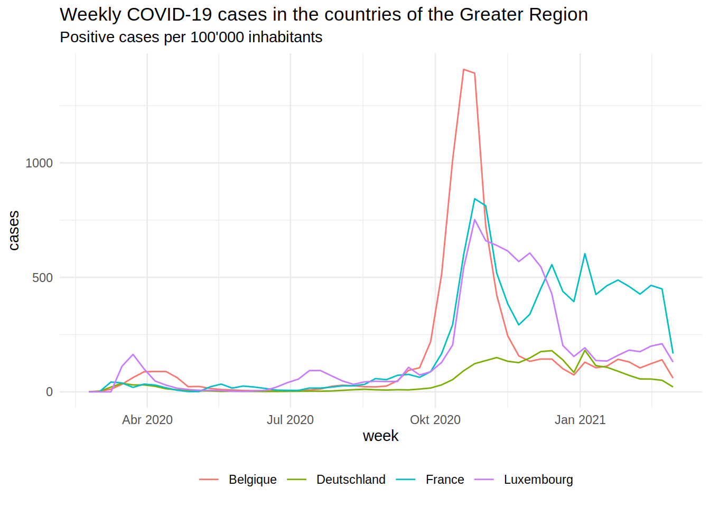
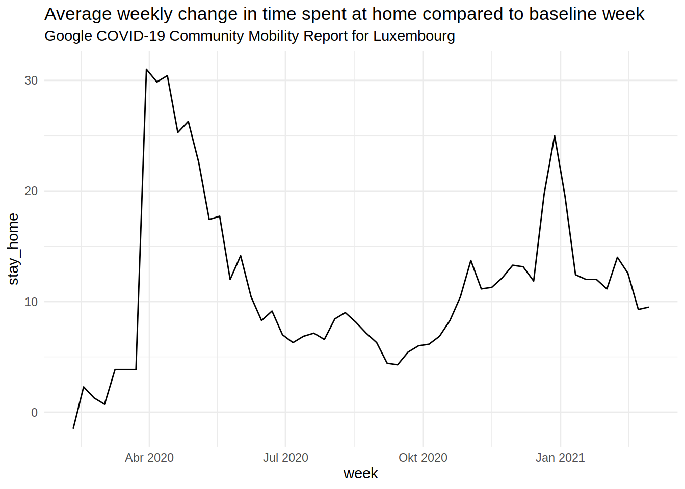
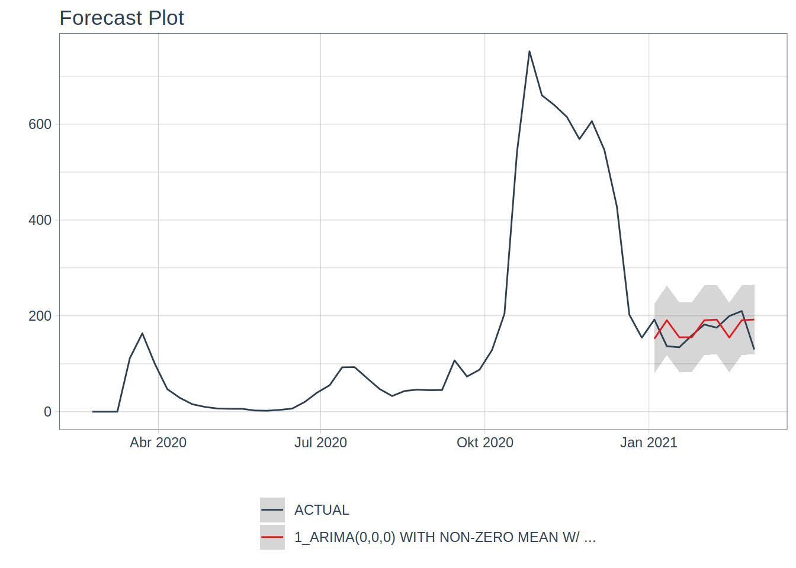
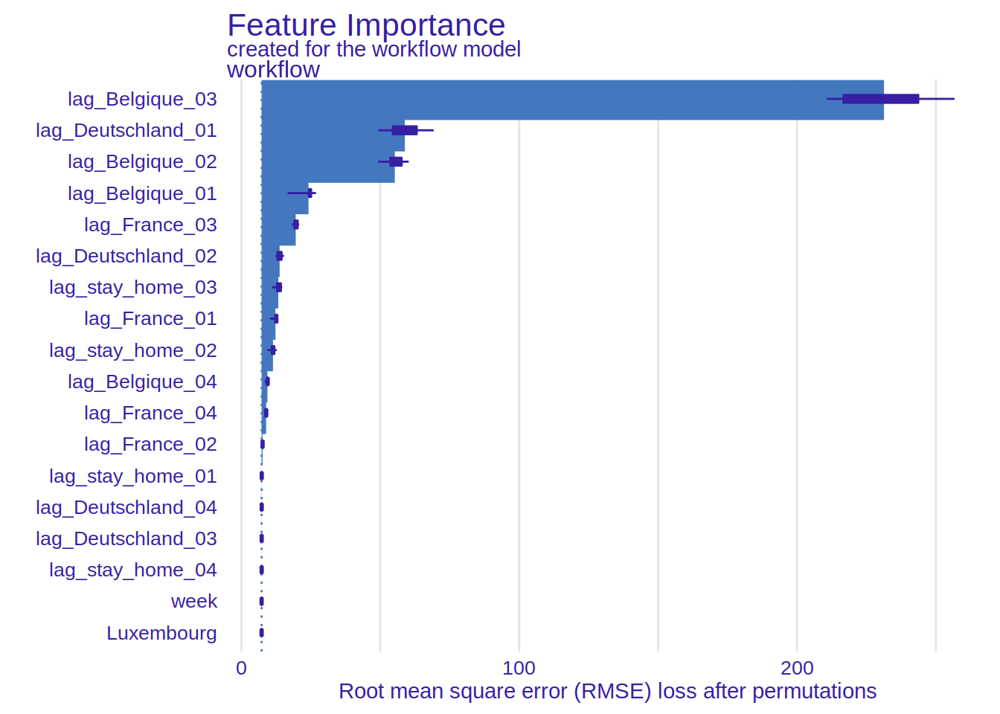

Using explainability methods to understand (some part) of the spread of COVID-19 in a landlocked country

This blog post is based on an article I’m currently working on which you can find here. Contributions more than welcome!
“You expect me to read all this?”
The gist of this blog post can be summarised in the following sentence: lagged positive cases of the neighbouring regions of Luxembourg predict weekly positive cases in Luxembourg. But prediction is not the goal of all this, but rather, understanding. Go grab a hot beverage and read on.
Introduction
Due to its quite unique characteristics, the spread of COVID-19 in a landlocked country like Luxembourg is the exact opposite of the spread of COVID-19 that can be observed on an island country such as New Zealand, or Madagascar. A landlocked country like Luxembourg, which is furthermore highly dependent on foreign workers (50% of Luxembourg’s workforce are non-residents commuters from France, Belgium and Germany), has many more difficulties to control the spread of COVID-19 within its borders. Unlike an island country, a landlocked country that is highly tied to its neighbours cannot simply close its borders and put a very hard lockdown in place to control the pandemic. Or if the landlocked country does that, as soon as it opens its borders, the disease will start spreading again. To illustrate this idea, I will discuss how COVID-19 starting spreading, but not only within the borders of Luxembourg, but rather within the so-called Greater Region. The Greater Region is a space for cross-border cooperation in the heart of Europe and is composed of the Grand-Duchy of Luxembourg, two Belgian Provinces, two French Départements and two German Bundesländer.

The figure above shows a map of the Greater Region with the flows of daily commuters between its constituent regions. Every day, according to this map from 2018, more than 150000 commuters go to Luxembourg to work. In 2019, it was reported that this number reached 200000.
The approach I will be using here is thus as follows: I will train a machine learning model to predict the spread of COVID-19 in Luxembourg using openly available data on the weekly positive cases of COVID-19. However, because of the very tight economic and social integration of Luxembourg to its neighbours I will use as features weekly positive cases in the border regions as well as Google Mobility data for Luxembourg to proxy for hard, and soft, lockdowns. I will show that lags of weekly cases in the neighbouring regions predict cases for Luxembourg. The end goal however, is not to build a model to predict how many weekly positive cases will be detected in Luxembourg. This would be a fools errand; in order to predict the future, the future has to look like the past, but in the case of this pandemic there is absolutely no guarantee that the future will look like the past, and there are many reasons for this. First of all, people are constantly adapting their behaviour, and public health policies are also constantly being tuned, and getting sometimes more restrictive, sometimes more relaxed. Secondly, vaccines have started being administrated and it would be impossible to predict the effect on weekly positive cases using the approach I’m using. Finally, there’s also the threat of the variants. Here again, it is impossible to predict which new variants could arise and how much more contagious -and deadly- these could be. So then, why bother? The end goal is not prediction, but explainability. Once the model is trained, I will use explainability methods to show which variables, and their interaction with each other, predict positive cases for Luxembourg. This will be a clear illustration of the hypothesis that I posited at the beginning; that a landlocked country like Luxembourg which is very tightly economically and socially integrated with its neighbours cannot fight a pandemic on its own, but must cooperate with its neighbours. This argument can also be applied to any other country in the same situation as Luxembourg or even to the constituent states of a federal nation. Unfortunately, the virus does not respect the borders of sovereign nations.
This blog post won’t be a tutorial, I will only present some interesting results. I think that I will do a walkthrough tutorial of the methods that I use here in a video, as it will make things easier to explain.
The data to replicate the results
Data on positive cases from the regions of the Greater Region was collected through each of the countries’ open data portal. The levels of detail were heterogeneous, with Belgium and Germany providing a high level of detail (daily cases by sex, age group, Province in the case of Belgium, and Land- and Stadtkreise in the case of Germany), followed by France (daily cases by department and age group), with Luxembourg providing the least amount of details; only daily cases at the national level. In order to simplify the process of getting the data from all these sources, I wrote an R package called {covidGrandeRegion} which can be found on the following github repository. This R package provides several functions to download daily or weekly data, either for one single country or for the whole of the Greater Region as well as a function to call an interactive map of the region with a timeline, making it easy to visualise the spread of the disease through the region. It is also possible to normalize the data by dividing the daily or weekly cases by the size of the population in each sub-region. However, at the time of writing, there seems to be issues if you run this on Windows, and I suspect it’s because of Windows’ limitation with UTF-8 characters. In any case, you can also download the data from here instead of having to install the package and run the preprocessing steps.
Another variable that was included comes from the Google Mobility website. This data shows on a daily basis how communities move since the start of the pandemic. This data is used here as proxy for lockdowns.
Let’s take a look at the data:
dplyr::glimpse(data.table::fread("https://raw.githubusercontent.com/b-rodrigues/covid_pred/master/data/data_for_model.csv"))## Rows: 54
## Columns: 18
## $ week <date> 2020-02-24, 2020-03-02, 2020-03-09, 2020-03-16, 20…
## $ Luxembourg <dbl> 0.000000, 0.000000, 0.000000, 111.642081, 163.55005…
## $ lag_Belgique_01 <dbl> 0.00000000, 0.08229904, 2.57870326, 11.27496850, 32…
## $ lag_Belgique_02 <dbl> 0.00000000, 0.00000000, 0.08229904, 2.57870326, 11.…
## $ lag_Belgique_03 <dbl> 0.00000000, 0.00000000, 0.00000000, 0.08229904, 2.5…
## $ lag_Belgique_04 <dbl> 0.00000000, 0.00000000, 0.00000000, 0.00000000, 0.0…
## $ lag_Deutschland_01 <dbl> 0.0000000, 0.7085512, 2.8145229, 20.5086217, 37.356…
## $ lag_Deutschland_02 <dbl> 0.0000000, 0.0000000, 0.7085512, 2.8145229, 20.5086…
## $ lag_Deutschland_03 <dbl> 0.0000000, 0.0000000, 0.0000000, 0.7085512, 2.81452…
## $ lag_Deutschland_04 <dbl> 0.0000000, 0.0000000, 0.0000000, 0.0000000, 0.70855…
## $ lag_France_01 <dbl> 0.000000, 0.000000, 2.418298, 42.752058, 38.649588,…
## $ lag_France_02 <dbl> 0.000000, 0.000000, 0.000000, 2.418298, 42.752058, …
## $ lag_France_03 <dbl> 0.000000, 0.000000, 0.000000, 0.000000, 2.418298, 4…
## $ lag_France_04 <dbl> 0.000000, 0.000000, 0.000000, 0.000000, 0.000000, 2…
## $ lag_stay_home_01 <dbl> 0.0000000, 1.2857143, 0.7142857, 3.8571429, 3.85714…
## $ lag_stay_home_02 <dbl> 0.0000000, 0.0000000, 1.2857143, 0.7142857, 3.85714…
## $ lag_stay_home_03 <dbl> 0.0000000, 0.0000000, 0.0000000, 1.2857143, 0.71428…
## $ lag_stay_home_04 <dbl> 0.0000000, 0.0000000, 0.0000000, 0.0000000, 1.28571…
The target variable is Luxembourg and contains the weekly positive COVID-19 cases. Then, we can see the weekly positive cases for the French, Belgian and German constituent regions of the Greater Region as well as the Google mobility data (four last rows). All these variables were lagged up to four times: the idea is to show that lagged positive cases of the neighbouring regions predict weekly positive cases in Luxembourg.
Visualisations
The plot below shows the epidemic curves for the Regions of the Greater Region (by country):

The second wave from October/November was quite bad. The German part of the Greater Region did pretty well overall. The plot below shows the daily percentage change in time spent at home in Luxembourg (from the Google Mobility data):

The lockdown from Spring 2020 appears very clearly in the data. The soft lockdown during the Christmas holidays as well.
Now armed with this data, I fit a machine learning model using the {modeltime} package and the {tidymodels} framework. As I said in the beginning, I won’t go into technical details here. I will make a video to explain exactly what I did. In the meantime, let’s take a look at what the model predicts:
## Warning in max(ids, na.rm = TRUE): no non-missing arguments to max; returning
## -Inf
I did the usual stuff: split the data into a training set and a testing set (and since we’re dealing with time series data, I respected the time structure of the data), fit the model on the training set and saw how well it fared on the testing set. It did not bother tuning it, because, as said previously, prediction is not really the goal, and also, the model is already doing pretty well, which honestly surprised me. The model I fit was an ARIMA model, quite standard in the time series literature, but then, in order to extract even more signal from the noise, an XGBOOST model is fit on the residuals of the ARIMA model. This is where the lagged features come into play. What’s interesting, is that the ARIMA model has 0 for each of its hyper-parameters, meaning that the ARIMA model is essentially telling us that the average weekly cases over the training set are the best predictor it can find. But what about the XGBOOST part of the model? What else can be extracted? This is where explainability comes into play. I use the {DALEX} and {DALEXtra} package for explainability, and show here the variable importance plot. In the paper in the repository, I have more plots and use more methods. But I still need to think more about it. So for this blog post, I focus on this plot which is quite simple to interpret, and also quite telling:

It would seem that the single most important feature are the positive cases in Belgium (1, 2 and 3 weeks lags) and cases from the previous week in Germany.
This seems to confirm the hypothesis I formulated at the beginning. I will continue exploring this, but I am really looking for feedback as well. Tell me where I’m wrong or too optimistic!